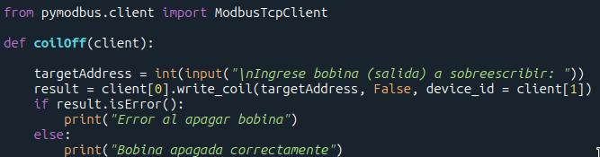

Payload Industrial: Explotando PLCs y la Respuesta de Ciberdefensa Desplegable

¡Te desafiamos a poner a prueba tus conocimientos en seguridad industrial!
Utilizando las bocas de red disponibles en nuestro Banco de Pruebas SCADA, o conectándote a nuestra red de forma remota, tu misión es encontrar nuestros PLCs activos y alterar su estado, intentando apagarlos (poner sus bobinas a 0 lógico) o forzar un cambio en su modo de operación.
Una ayudita...
¡Mucha suerte! Si logras apagar un PLC, te invitamos a que nos muestres cómo lo hiciste. Nuestro equipo de ciberdefensa desplegable estará listo para responder a tu ataque.
¿Queres contarnos que hiciste? ¿Tenes comentarios adicionales o quieres contactar al equipo?
Envíanos un correo a:
ekoparty2025.otvillage.uai@gmail.com